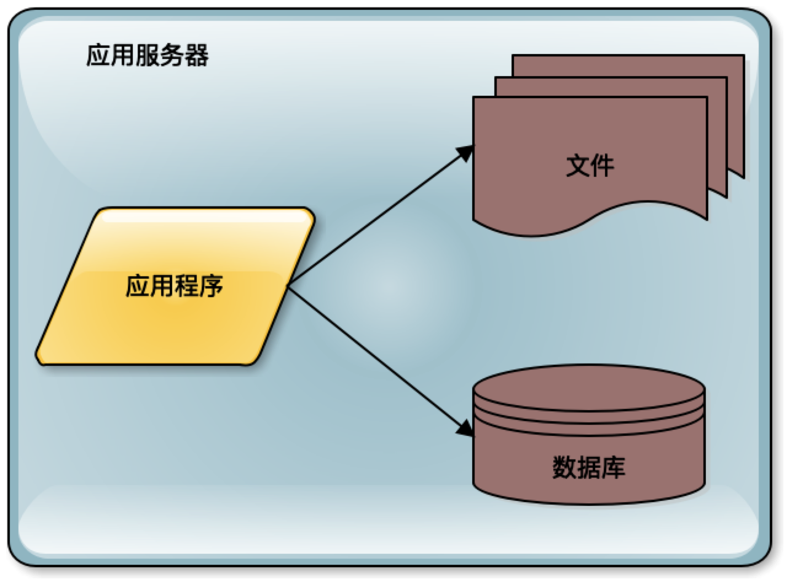
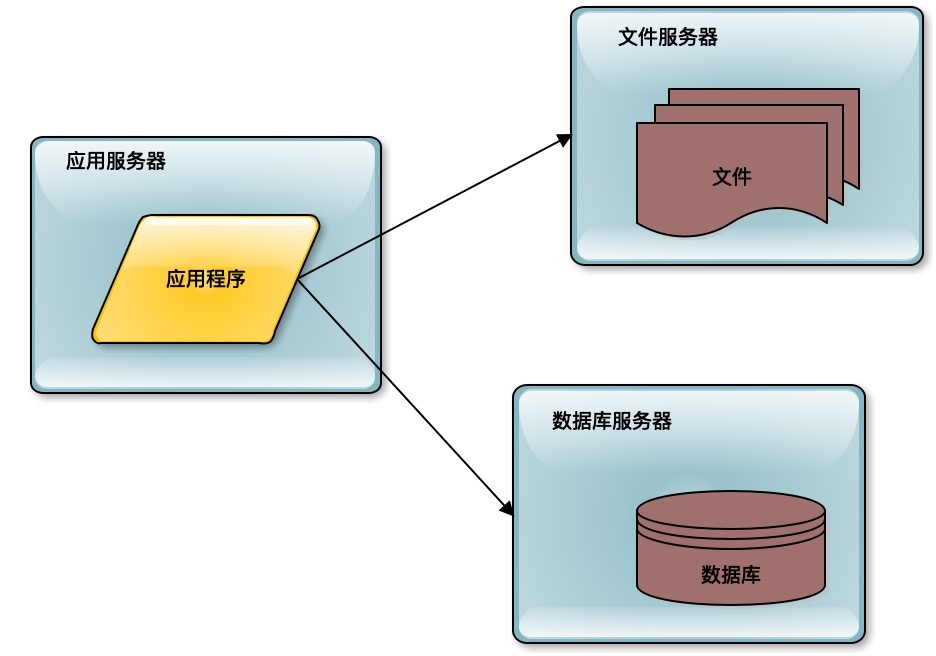
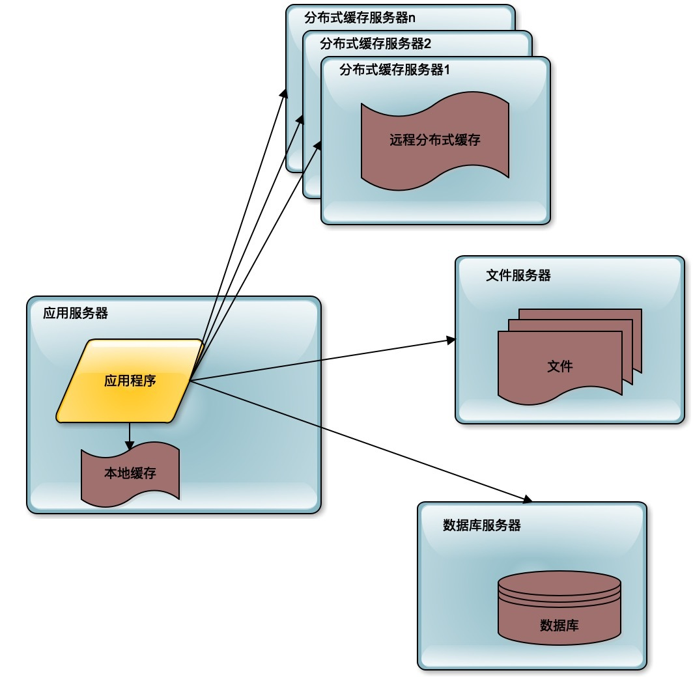
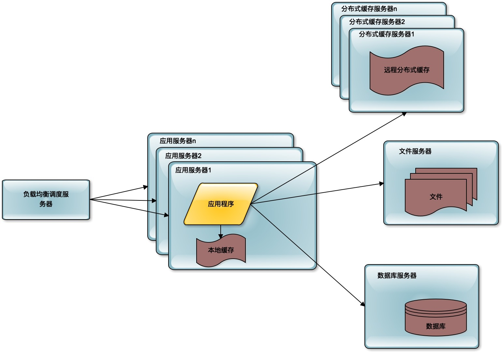
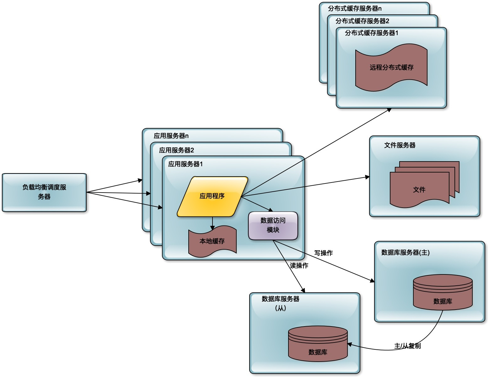
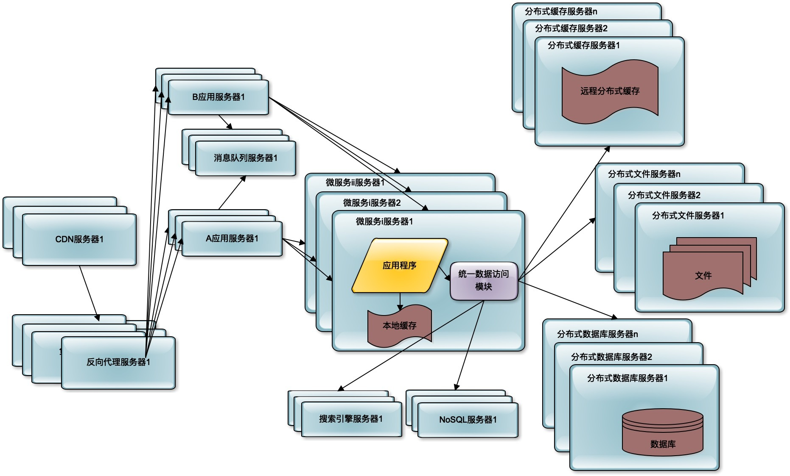

- 00 开篇词 掌握软件开发技术的第一性原理.md
- 01 程序运行原理：程序是如何运行又是如何崩溃的？.md
- 02 数据结构原理：Hash表的时间复杂度为什么是O(1)？.md
- 03 Java虚拟机原理：JVM为什么被称为机器（machine）？.md
- 04 网络编程原理：一个字符的互联网之旅.md
- 05 文件系统原理：如何用1分钟遍历一个100TB的文件？.md
- 06 数据库原理：为什么PrepareStatement性能更好更安全？.md
- 07 答疑 Java Web程序的运行时环境到底是怎样的？.md
- 07 编程语言原理：面向对象编程是编程的终极形态吗？.md
- 08 软件设计的方法论：软件为什么要建模？.md
- 09 软件设计实践：如何使用UML完成一个设计文档？.md
- 10 软件设计的目的：糟糕的程序员比优秀的程序员差在哪里？.md
- 11 软件设计的开闭原则：如何不修改代码却能实现需求变更？.md
- 12 软件设计的依赖倒置原则：如何不依赖代码却可以复用它的功能？.md
- 13 软件设计的里氏替换原则：正方形可以继承长方形吗？.md
- 14 软件设计的单一职责原则：为什么说一个类文件打开最好不要超过一屏？.md
- 15 软件设计的接口隔离原则：如何对类的调用者隐藏类的公有方法？.md
- 16 设计模式基础：不会灵活应用设计模式，你就没有掌握面向对象编程.md
- 17 设计模式应用：编程框架中的设计模式.md
- 18 反应式编程框架设计：如何使程序调用不阻塞等待，立即响应？.md
- 19 组件设计原则：组件的边界在哪里？.md
- 20 答疑 对于设计模式而言，场景到底有多重要？.md
- 20 领域驱动设计：35岁的程序员应该写什么样的代码？.md
- 21 分布式架构：如何应对高并发的用户请求.md
- 22 缓存架构：如何减少不必要的计算？.md
- 23 异步架构：如何避免互相依赖的系统间耦合？.md
- 24 负载均衡架构：如何用10行代码实现一个负载均衡服务？.md
- 25 数据存储架构：如何改善系统的数据存储能力？.md
- 26 搜索引擎架构：如何瞬间完成海量数据检索？.md
- 27 微服务架构：微服务究竟是灵丹还是毒药？.md
- 28 高性能架构：除了代码，你还可以在哪些地方优化性能？.md
- 29 高可用架构：我们为什么感觉不到淘宝应用升级时的停机？.md
- 30 安全性架构：为什么说用户密码泄漏是程序员的锅？.md
- 31 大数据架构：大数据技术架构的思想和原理是什么？.md
- 32 AI与物联网架构：从智能引擎到物联网平台.md
- 33 区块链技术架构：区块链到底能做什么？.md
- 33 答疑 互联网需要解决的技术问题是什么？.md
- 34 技术修炼之道：同样工作十几年，为什么有的人成为大厂架构师，有的人失业？.md
- 35 技术进阶之道：你和这个星球最顶级的程序员差几个等级？.md
- 36 技术落地之道：你真的知道自己要解决的问题是什么吗？.md
- 37 技术沟通之道：如何解决问题？.md
- 38 技术管理之道：你真的要转管理吗？.md
- 38 答疑 工作中的交往和沟通，都有哪些小技巧呢？.md
- 加餐 软件设计文档示例模板.md
- 结束语 期待未来的你，成为优秀的软件架构师.md
21 分布式架构：如何应对高并发的用户请求
互联网应用以及云计算的普及，使得架构设计和软件技术的关注点从如何实现复杂的业务逻辑，转变为如何满足大量用户的高并发访问请求。
一个简单的计算处理过程，如果一旦面对大量的用户访问，整个技术挑战就会变得完全不同，软件开发方法、技术团队组织、软件的过程管理都会完全不同。
以新浪微博为例，新浪微博最开始只有两个工程师，一个前端，一个后端，两个人开发了一个星期就把新浪微博开发出来了。现在许多年过去了，新浪微博的技术团队有上千人，这些人要应对的技术挑战，一方面来自于更多更复杂的功能，一方面来自于随着用户量的增加而带来的高并发访问压力。
这种挑战和压力几乎对所有的大型互联网系统都是一样的，淘宝、百度、微信等，虽然功能各不相同，但都会面对同样的高并发用户的访问请求压力。要知道，同样的功能，供几个人使用和供几亿人使用，技术架构是完全不同的。
当同时访问系统的用户不断增加的时候，需要消耗的系统计算资源也不断增加，需要更多的CPU和内存去处理用户的计算请求，需要更多的网络带宽去传输用户的数据，需要更多的磁盘空间去存储用户的数据。当消耗的资源超过了服务器资源的极限的时候，服务器就会崩溃，整个系统无法正常使用。
那么如何解决高并发的用户请求带来的问题？
垂直伸缩与水平伸缩
为了应对高并发用户访问带来的系统资源消耗，一种解决办法是垂直伸缩。所谓的垂直伸缩就是提升单台服务器的处理能力，比如用更快频率的CPU，用更多核的CPU，用更大的内存，用更快的网卡，用更多的磁盘组成一台服务器，使单台服务器的处理能力得到提升。通过这种手段提升系统的处理能力。
在大型互联网出现之前，传统的行业，比如银行、电信这些企业的软件系统，主要是使用垂直伸缩这种手段实现系统能力的提升，在服务器上增强，提升服务器的硬件水平。当业务增长，用户增多，服务器计算能力无法满足要求的时候，就会用更强大的计算机，比如更换更快的CPU和网卡、更大的内存和磁盘，从服务器升级到小型机，从小型机提升到中型机，从中型机提升到大型机，服务器越来越强大，处理能力越来越强大，当然价格也越来越昂贵，运维越来越复杂。
垂直伸缩带来的价格成本和服务器的处理能力并不一定呈线性关系，也就是说，增加同样的费用，并不能得到同样的计算能力。而且计算能力越强大，需要花费的钱就越多。
同时，受计算机硬件科技水平的制约，单台服务器的计算能力并不能无限增加，而互联网，特别是物联网的计算要求几乎是无限的。
因此，在互联网以及物联网领域，并不使用垂直伸缩这种方案，而是使用水平伸缩。
所谓的水平伸缩，指的是不去提升单机的处理能力，不使用更昂贵更快更厉害的硬件，而是使用更多的服务器，将这些服务器构成一个分布式集群，通过这个集群，对外统一提供服务，以此来提高系统整体的处理能力。
但是要想让更多的服务器构成一个整体，就需要在架构上进行设计，让这些服务器成为整体系统的一个部分，将这些服务器有效地组织起来，统一提升系统的处理能力。这就是互联网应用和云计算中普遍采用的分布式架构方案。
互联网分布式架构演化
分布式架构是互联网企业在业务快速发展过程中，逐渐发展起来的一种技术架构，包括了一系列的分布式技术方案：分布式缓存、负载均衡、反向代理与CDN、分布式消息队列、分布式数据库、NoSQL数据库、分布式文件、搜索引擎、微服务等等，还有将这些分布式技术整合起来的分布式架构方案。
这些分布式技术和架构方案是互联网应用随着用户的不断增长，为了满足高并发用户访问不断增长的计算和存储需求，逐渐演化出来的。可以说，几乎所有这些技术都是由应用需求直接驱动产生的。
下面我们通过一个典型的互联网应用的发展历史，来看互联网系统是如何一步一步逐渐演化出各种分布式技术，并构成一个复杂庞大的分布式系统的。
在最早的时候，系统因为用户量比较少，可能只有几个用户，比如刚才提到的微博。一个应用访问自己服务器上的数据库，访问自己服务器的文件系统，构成了一个单机系统，这个系统就可以满足少量用户使用了。

如果这个系统被证明业务上是可行的，是有价值的，那么用户量就会快速增长。比如像新浪微博引入了一些明星大V开通微博，于是迅速吸引了这些明星们的大批粉丝前来关注。这个时候服务器就不能够承受访问压力了，需要进行第一次升级，数据库与应用分离。

前面单机的时候，数据库和应用程序是部署在一起的。进行第一次分离的时候，应用程序、数据库、文件系统分别部署在不同的服务器上，从1台服务器变成了3台服务器，那么相应的处理能力就提升了3倍。
这种分离几乎是不需要花什么技术成本的，只需要把数据库、文件系统进行远程部署，进行远程访问就可以了。
而随着用户进一步的增加，更多的粉丝加入微博，3台服务器也不能够承受这样的压力了，那么就需要使用缓存改善性能。

所谓缓存，就是将应用程序需要读取的数据缓存在缓存中，通过缓存读取数据，而不是通过数据库读取数据。缓存主要有分布式缓存和本地缓存两种。分布式缓存将多台服务器共同构成一个集群，存储更多的缓存数据，共同对应用程序提供缓存服务，提供更强大的缓存能力。
通过使用缓存，一方面应用程序不需要去访问数据库，因为数据库的数据是存在磁盘上的，访问数据库需要花费更多的时间，而缓存中的数据只是存储在内存中的，访问时间更短；另一方面，数据库中的数据是以原始数据的形式存在的，而缓存中的数据通常是以结果形式存在，比如说已经构建成某个对象，缓存的就是这个对象，不需要进行对象的计算，这样就减少了计算的时间，同时也减少了CPU的压力。最主要的，应用通过访问缓存降低了对数据库的访问压力，而数据库通常是整个系统的瓶颈所在。降低了数据库的访问压力，就是改善整个系统的处理能力。
随着用户的进一步增加，比如微博有更多的明星加入进来，并带来了更多的粉丝。那么应用服务器可能又会成为瓶颈，因为连接大量的并发用户的访问，这时候就需要对应用服务器进行升级。通过负载均衡服务器，将应用服务器部署为一个集群，添加更多的应用服务器去处理用户的访问。

在微博上，我们的主要操作是刷微博，也就是读微博。如果只是明星们发微博，粉丝刷微博，那么对数据库的访问压力并不大，因为可以通过缓存提供微博数据。但事实上，粉丝们也要发微博，发微博就是写数据，这样数据库会再一次成为整个系统的瓶颈点。单一的数据库并不能承受这么大的访问压力。
这时候的解决办法就是数据库的读写分离，将一个数据库通过数据复制的方式，分裂为两个数据库，主数据库主要负责数据的写操作，所有的写操作都复制到从数据库上，保证从数据库的数据和主数据库数据一致，而从数据库主要提供数据的读操作。

通过这样一种手段，将一台数据库服务器水平伸缩成两台数据库服务器，可以提供更强大的数据处理能力。
对于大多数的互联网应用而言，这样的分布式架构就已经可以满足用户的并发访问压力了。但是对于更大规模的互联网应用而言，比如新浪微博，还需要解决海量数据的存储与查询，以及由此产生的网络带宽压力以及访问延迟等问题。此外随着业务的不断复杂化，如何实现系统的低耦合与模块化开发、部署也成为重要的技术挑战。
海量数据的存储，主要通过分布式数据库、分布式文件系统、NoSQL数据库解决。直接在数据库上查询已经无法满足这些数据的查询性能要求，还需要部署独立的搜索引擎提供查询服务。同时减少数据中心的网络带宽压力，提供更好的用户访问延时，使用CDN和反向代理提供前置缓存，尽快返回静态文件资源给用户。
为了使各个子系统更灵活易于扩展，则使用分布式消息队列将相关子系统解耦，通过消息的发布订阅完成子系统间的协作。使用微服务架构将逻辑上独立的模块在物理上也独立部署，单独维护，应用系统通过组合多个微服务完成自己的业务逻辑，实现模块更高级别的复用，从而更快速地开发系统和维护系统。

微服务、消息队列、NoSQL等这些分布式技术在出现早期的时候，比较有技术难度和使用门槛，只在相对比较大规模的互联网系统中使用。但是这些年随着技术的不断成熟，特别是云计算的普及，使用门槛逐渐降低，许多中小规模的系统，也已经普遍使用这些分布式技术架构设计自己的互联网系统了。
小结
随着互联网越来越普及，越来越多的企业采用面向互联网的方式开展自己的业务。传统的IT系统，用户量是有限而确定的，超市系统的用户主要是超市的收银员，银行系统的用户主要是银行的柜员，但是超市、银行这些企业如果使用互联网开展自己的业务，那么应用系统的用户量可能会成千上万倍地增加。
这些海量的用户访问企业的后端系统，就会产生高并发的访问压力，需要消耗巨大的计算资源，如何增加计算资源以满足高并发的用户访问压力，正是互联网架构技术的核心驱动力。主要就是各种分布式技术，我将会在后续讲解其中比较典型的几种分布式技术架构。
思考题
互联网应用系统和传统IT系统面对的挑战，除了高并发，还有哪些不同？
欢迎你在评论区写下你的思考，也欢迎把这篇文章分享给你的朋友或者同事，一起交流。
© 2019 - 2023 Liangliang Lee. Powered by Vert.x and hexo-theme-book.